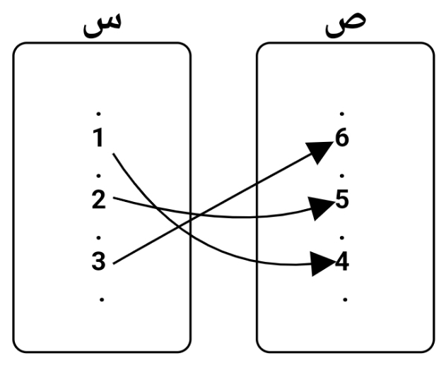

التطبيق هو علاقة بين عناصر مجموعتين، حيث يتم ربط كل عنصر في المجموعة الأولى بعنصر واحد فقط في المجموعة الثانية. يُرمز للتطبيق بين مجموعتين س و ص بالرمز ت، حيث يكون لكل عنصر في س عنصر واحد فقط في ص مرتبط به.
إذا كانت س و ص مجموعتين، فإن تطبيق ت من س إلى ص هو علاقة تربط كل عنصر من س بعنصر واحد فقط في ص.
لنأخذ المثال التالي:
افترض أن لدينا المجموعتين: س = {1، 2، 3} و ص = {4، 5، 6}.
يمكن أن يكون لدينا تطبيق ت من س إلى ص كما يلي:
ت = {(1، 4)، (2، 5)، (3، 6)}
في هذا المثال، كل عنصر في س يرتبط بعنصر واحد فقط في ص، مما يجعل ت تطبيقاً.
يمكن تمثيل التطبيق باستخدام رسم بياني لتوضيح كيف أن كل عنصر في مجموعة س يرتبط بعنصر واحد فقط في مجموعة ص.
افترض أن لدينا العناصر التالية: س = {1، 2، 3} و ص = {6، 5، 4}. في الرسم البياني، يتم رسم أسهم من كل عنصر في س إلى العنصر المرتبط به في ص.
الصورة أعلاه توضح كيفية تطبيق كل عنصر في مجموعة س على عنصر واحد فقط في مجموعة ص.
تأكد من أن كل عنصر في مجموعة س يرتبط بعنصر واحد فقط في مجموعة ص عند التحقق من التطبيق. التطبيق هو نوع خاص من العلاقات ويستخدم في الكثير من التطبيقات الرياضية والعلمية.